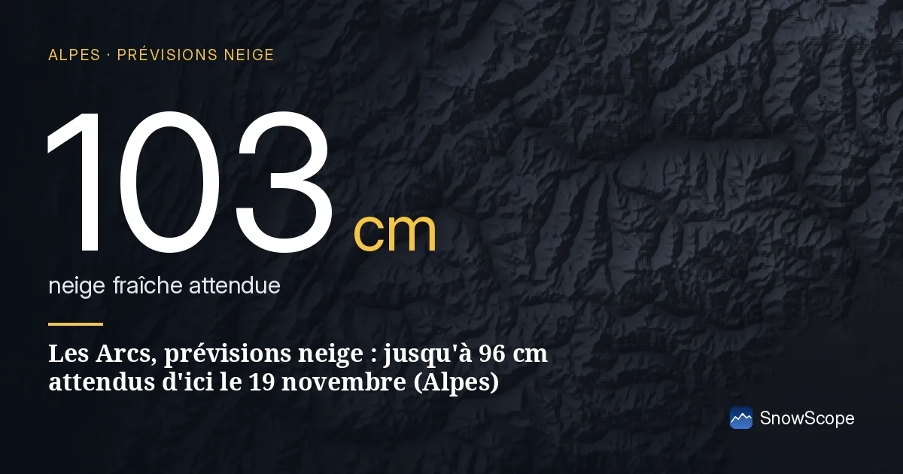

Les Arcs : 96 cm en approche ; trois jours d'enneigement
Les Arcs affiche 46 cm aux versants supérieurs et s'apprête à se transformer. SnowScope, simulé le 16 novembre, prévoit 96 cm de neige nouvelle arrivant sur les trois prochains jours, avec aujourd'hui (17 novembre) apportant les chutes les plus importantes—environ 39 cm—alors qu'une vague de tempête importante traverse les Alpes françaises.
Consultez les prévisions neige en temps réel pour Les Arcs sur l'application SnowScopeHauteurs de neige, alertes poudreuse et carte 3D, gratuitement.
La neige décisive d'aujourd'hui
Le timing est net dans SnowScope : les Arcs recevront 39 cm aujourd'hui, 22 cm demain, et 35 cm le 19 novembre. Les trois jours apportent de la neige fraîche, mais aujourd'hui est l'événement principal. Les versants supérieurs présentent actuellement seulement 46 cm, donc l'accumulation d'aujourd'hui à elle seule augmentera l'enneigement existant de 85 pour cent. Les conditions sont favorables : le niveau de congélation aux Arcs atteint 3 020 m à son maximum aujourd'hui, ce qui signifie que pratiquement toutes les précipitations aux altitudes supérieures tomberont sous forme de neige, pas de pluie. C'est crucial pour consolider une base stable au-dessus de 3 000 m.
| Station | Hauteur de neige | Neige fraîche, 72 h | Attendu, jours suivants | Sommet |
|---|---|---|---|---|
| Orelle | 85 cm | 35 cm | 103 cm | 3 221 m |
| Les Grands Montets | 45 cm | 31 cm | 100 cm | 2 768 m |
| Courmayeur | 34 cm | 29 cm | 100 cm | 2 749 m |
| La Grave | 96 cm | 46 cm | 98 cm | 3 543 m |
| Les Arcs | 46 cm | 29 cm | 96 cm | 3 205 m |

Le contexte alpin plus large
Les Arcs fait partie d'un événement d'enneigement plus large affectant les grands domaines de la chaîne. Orelle mène la marche avec 103 cm prévus sur les trois prochains jours, tandis que Les Grands Montets, Courmayeur et La Grave reçoivent tous 98–100 cm. Le schéma est synchronisé : chaque domaine connaît ses chutes les plus importantes aujourd'hui (17 novembre), avec des apports plus modestes les deux jours suivants. Actuellement, parmi les 1 204 stations alpines que nous suivons dans notre réseau, 912 affichent une couverture de neige. D'ici le 19 novembre, cependant, ce nombre devrait tomber à 819 alors que les altitudes inférieures se réchauffent et connaissent une fonte ou de la pluie. Cette neige de début de saison est donc vulnérable à la consolidation si la météo devient plus douce ou ensoleillée après le passage de la tempête.
Dynamique de l'altitude et du niveau de congélation
L'enjeu de l'altitude est critique à ce stade de la saison. Les versants supérieurs et les hauts sommets capteront la neige nouvelle la plus épaisse ; les altitudes inférieures, par contraste, font face à un risque de précipitations mixtes. Dans les grands domaines, les zones de versants supérieurs accumulent 115–124 cm sur une fenêtre d'une semaine (à Orelle et Les Grands Montets respectivement), tandis que les altitudes de base dépassent à peine 10–12 cm. Aux Arcs spécifiquement, le niveau de congélation le 18 novembre baisse à 2 780 m à son maximum, ce qui signifie que les versants au-dessous de ce seuil connaîtront du grésil ou de la pluie en même temps que la neige ou à sa place. Le 19 novembre, le niveau de congélation tombe à 2 550 m, stabilisant le schéma de précipitation—mais seulement après que la zone de transition a affecté le terrain d'altitude moyenne. Concentrez-vous sur le terrain au-dessus du niveau de congélation, où la neige dominera tout au long de la tempête.
Contexte de début de saison et comparaisons
Pour contextualiser cette neige : Les Arcs affichent actuellement une moyenne de 20 cm en altitude moyenne (2 214 m), ce qui est en dessous de la normale du 17 novembre de 27 cm pour cette date et ce lieu. Cela dit, c'est plus profond qu'il y a une semaine (6 cm le 10 novembre), reflétant les cycles d'accumulation récents. Cette tempête poussera les zones intermédiaires et supérieures bien au-dessus de la normale pour la mi-novembre. Pour les skieurs de début de saison, la zone skiable s'étendra considérablement après ces trois jours.
Conseils aux skieurs
- Le 17 novembre est le jour le plus enneigé—attendez-vous aux meilleures conditions de poudreuse plus tard aujourd'hui et cette nuit aux altitudes les plus élevées.
- Le 17 novembre, le niveau de congélation atteint un pic à 3 020 m aux Arcs, donc pratiquement toutes les précipitations tombent sous forme de neige ; privilégiez les terrains élevés.
- Le 18 novembre apporte un tournant critique : le niveau de congélation baisse à 2 780 m, ce qui signifie que les versants au-dessous de ce seuil connaîtront du grésil. Concentrez les efforts de damage et de ski sur les altitudes supérieures.
- Attendez-vous à un effet de vent sur les arêtes exposées : même si les 96 cm de SnowScope arrivent, la redistribution du vent créera des zones dégagées et des ravins chargés.
- Après le 19 novembre, attendez-vous à une consolidation rapide ; la neige de début de saison se lie et se tasse rapidement une fois que les précipitations cessent.
À propos de ces chiffres
Les hauteurs de neige des stations sont la neige la plus épaisse sur le haut du domaine à la date indiquée ; ce sont des estimations pour une zone, pas une mesure en un point. Les prévisions peuvent changer. Consultez toujours le bulletin d'avalanche officiel avant le hors-piste.
Bulletins d'avalanche officiels: Météo-France BERA
Citer ce bulletin
Pour la recherche, l'enseignement ou la presse : chiffres et graphiques réutilisables librement sous CC BY 4.0 avec cette citation.
SnowScope (2026), Les Arcs : 96 cm en approche ; trois jours d'enneigement, https://snowscope.app/blog/fr/2026/11/alps-les-arcs-snow-forecast-16-november-2026.html, consulté le 2026-11-16
SnowScope (Atlas Labs). (2026, November 16). Les Arcs : 96 cm en approche ; trois jours d'enneigement. SnowScope snow reports. https://snowscope.app/blog/fr/2026/11/alps-les-arcs-snow-forecast-16-november-2026.html
BibTeX
@misc{snowscope2026alpslesarcssnowforecast1,
author = {{SnowScope (Atlas Labs)}},
title = {Les Arcs : 96 cm en approche ; trois jours d'enneigement},
year = {2026},
month = nov,
howpublished = {\url{https://snowscope.app/blog/fr/2026/11/alps-les-arcs-snow-forecast-16-november-2026.html}},
note = {Published 2026-11-17 06:57 UTC; accessed 2026-11-16}
}· CC BY 4.0 · Méthodes, données et outils →
Les Arcs : neige et température selon l'altitude, cet hiver vs l'hiver dernier (outils) →
Suivre Les Arcs
Gratuit : un message quand la neige arrive, et la météo chaque matin.